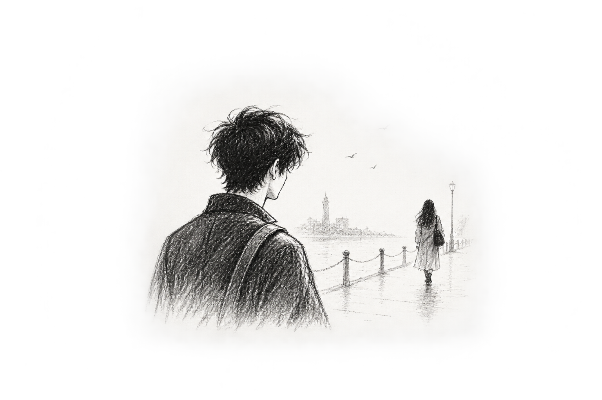

Is She Even Worth It?
Nothing that should have mattered….

Nothing that should have mattered….
We weren't friends....
That was the first thing I reminded myself whenever I caught myself thinking about her too much….
We had never texted each other good morning…
Never stayed up talking until two.
Never called just because we were bored...
We didn't know each other's secrets…
I didn't know what she did when she was sad.. what she cried about, or who she called when something
went wrong.
I didn't even know her that well.
We had just spoken.
Sometimes....
When we happened to be in the same place.
A few minutes here.
A conversation there.
Nothing that should have mattered…..
.
And yet, somehow, she had become the person I thought about when I had everything and nothing else to
think about.
It was ridiculous.
I knew it was ridiculous....
There were days when I wouldn't see her at all, and somehow she'd still occupy a corner of my mind.
Not constantly...
Just enough....
I didn't know her well enough to love her.
A song that reminded me of something she'd once said.
A stupid little joke that I knew would make her laugh.
And then, occasionally, she'd appear.
She'd smile.
“Hey….”
And I'd spend the next few hours wondering why one word from her could make an ordinary day feel
different……
I had never told anyone how much I liked her.
Mostly because saying it out loud made it sound even more absurd.
“I like her........”
Someone would inevitably ask:
“Her? How much do you even know about her????”
And I wouldn't have an answer.
Because the truth was...
I didn't know her well enough to love her.
But somehow, I knew her well enough to miss her.
And that was worse....
Because at least if we had been friends, I could blame the memories….
If we had been close, I could blame the time we'd spent together….
If she'd ever given me a reason to hope, I could blame her….
But she hadn't….
She had simply been kind.
She had simply talked to me.
She had simply smiled at me a few times.
And I'd taken those little moments and turned them into something they had never been.
I was going to stop.
So one evening, I made myself a promise.
I was going to stop.
Stop looking for her.
Stop hoping she'd be there.
Stop replaying conversations that had probably meant nothing to her.
Stop wondering whether she liked me.
Stop asking myself whether there could ever be an us.
I was going to let go…..
Because really
was she even worth it??...
I had almost convinced myself.
Is She Even Worth It?
I had almost convinced myself.
Until the next day.
stopped for half a second,
smiled, and said,
“Hey. Where have you been???...”
And just like that,
I had something to hope for again……